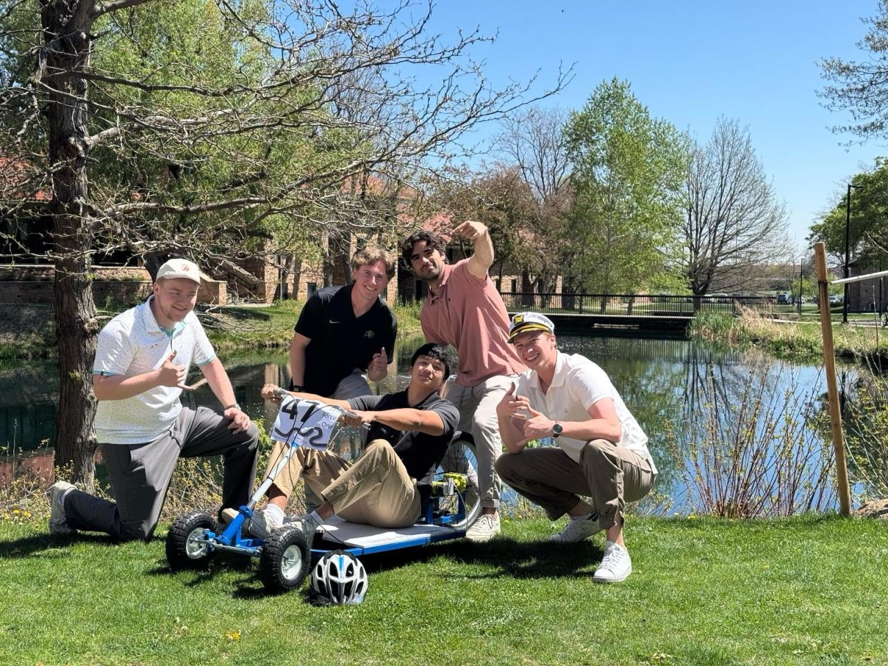
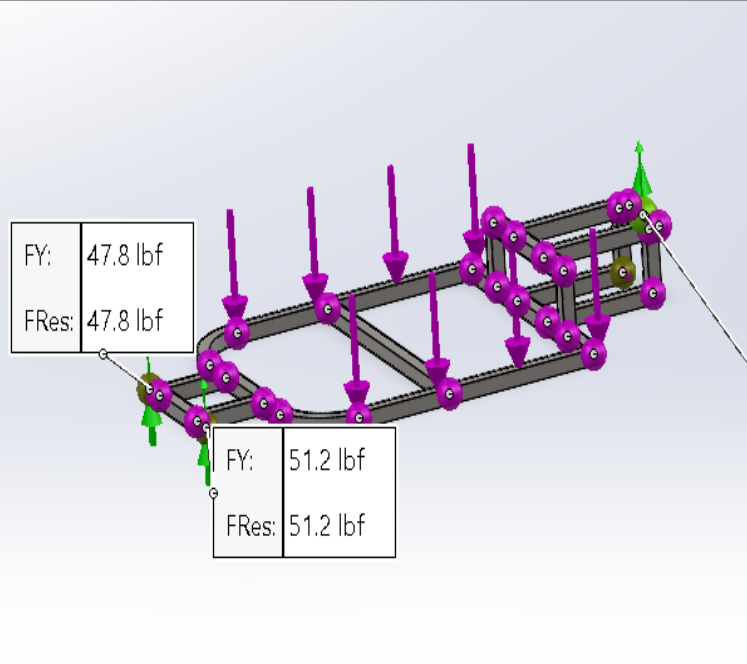
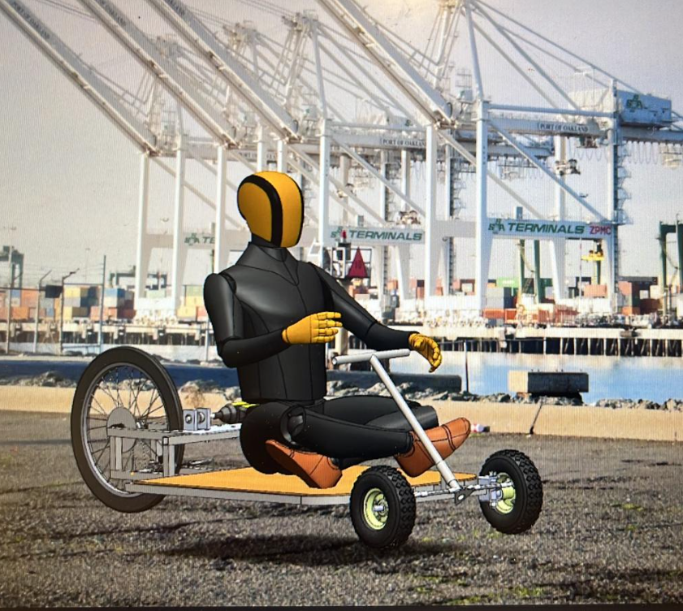
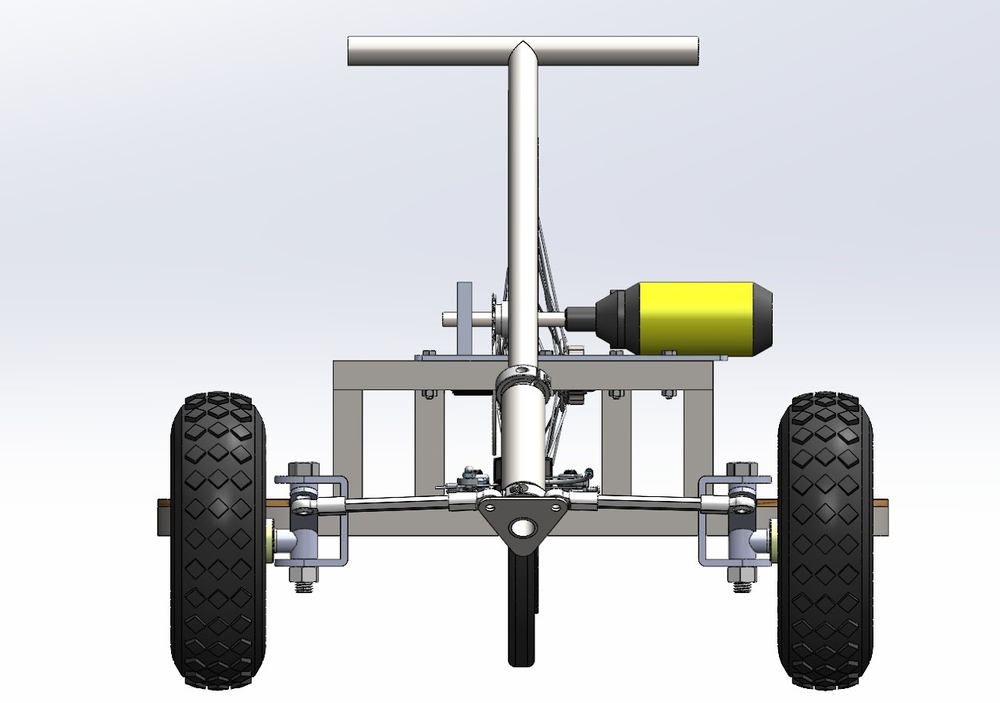
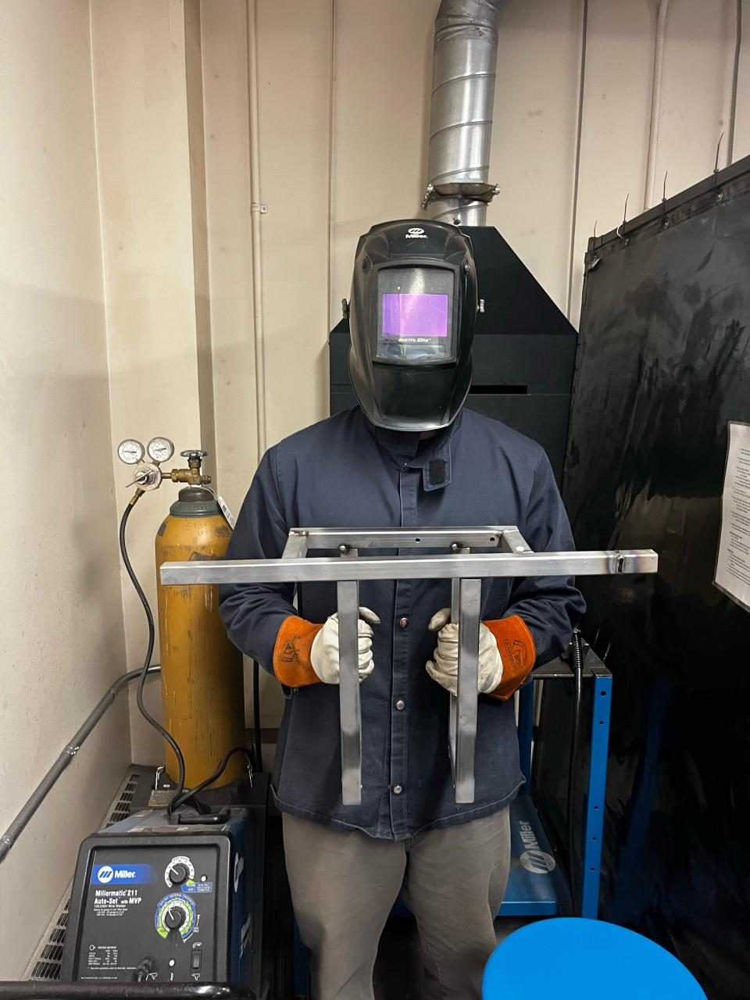
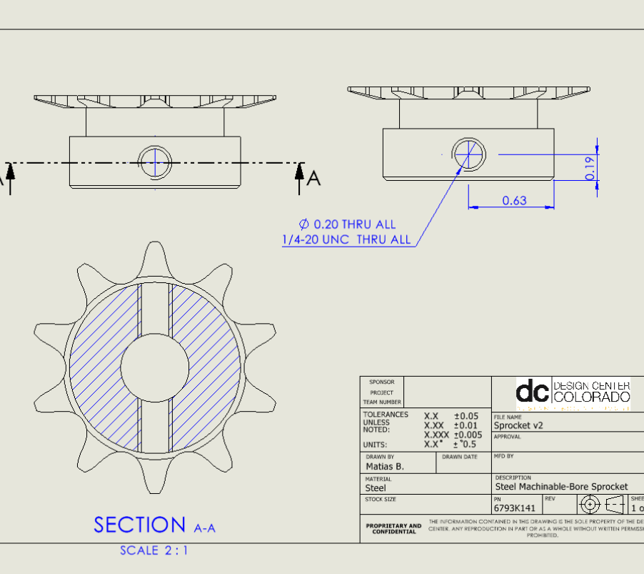
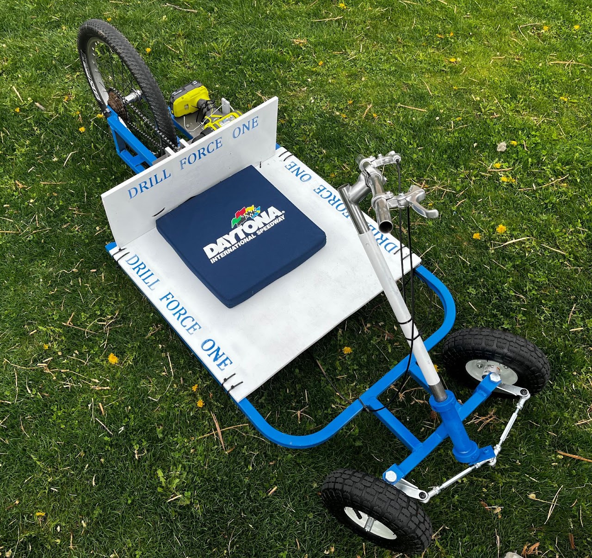

Drill Force One
Build a three-wheeled bike powered by nothing but a standard hand drill, from scratch, for under $200. That was the challenge, and I led a team of five to the starting line ahead of schedule.
The Project
Our team of five was tasked with designing and building a drill-powered, three-wheeled bike entirely from the ground up, all within a $200 budget. We split into roles and got to work. As the Project Manager, my job was to keep everyone coordinated, keep communication flowing, and set clear deadlines. Since we were all junior Mechanical Engineering students with a similar skill level, everyone contributed across the board, from calculations and design to manufacturing.
How We Pulled It Off
Right at the start, I proposed we meet in person twice a week. It made a bigger difference than I expected: our communication tightened up and we could make fast calls on design changes, goals, and timelines. After our Design Review, we bought roughly 70% of our materials up front. That early jump let us get into the machine shop well ahead of most other teams and start fabricating sooner.
I stayed hands-on in the shop too, helping machine parts and weld the frame together. Between the careful planning and genuinely strong collaboration, we finished the bike well before the competition deadline.
What I Learned
- Strong communication multiplies a team. When everyone's in the loop, tasks move faster and problems get solved before they grow.
- Blame kills momentum. Encouraging everyone to contribute without pointing fingers when things went sideways built the trust that kept us productive.
What I'd Do Differently
Budget management is the big one. On a tight budget, you have to talk through ideas and chase alternative solutions before spending. We hit a few snags that called for new components, and instead of brainstorming ways to redesign or reuse what we had, we too often just bought new parts, which is how we ended up nudging over budget.
Project Management Deep-Dive
Curious how I actually ran this as PM? The Gantt chart, bill of materials, and manufacturing control sheet all live here: → View PM Highlights.
Gallery






